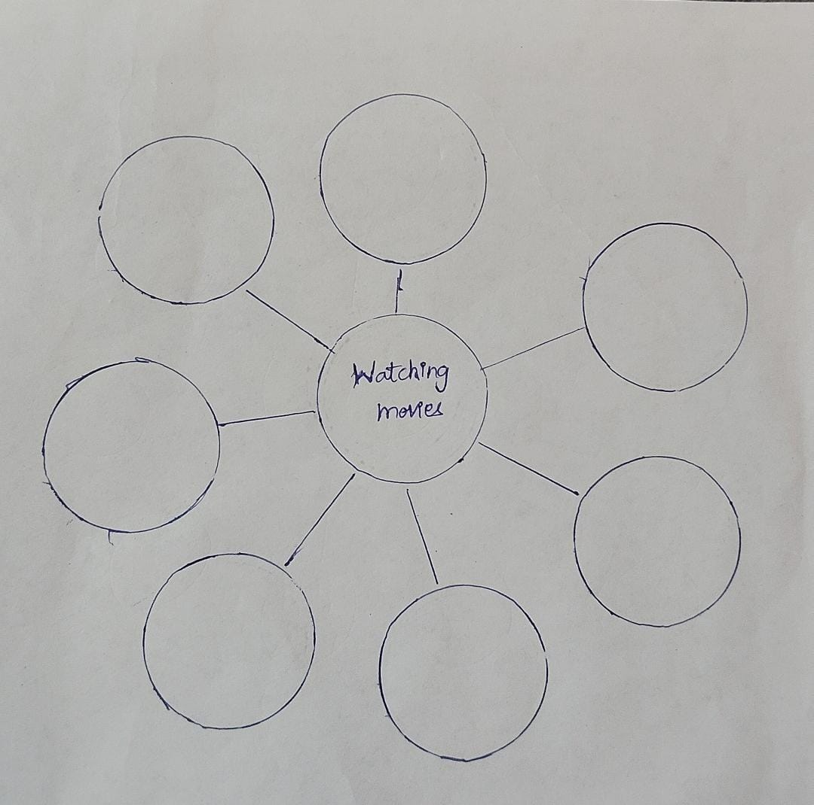
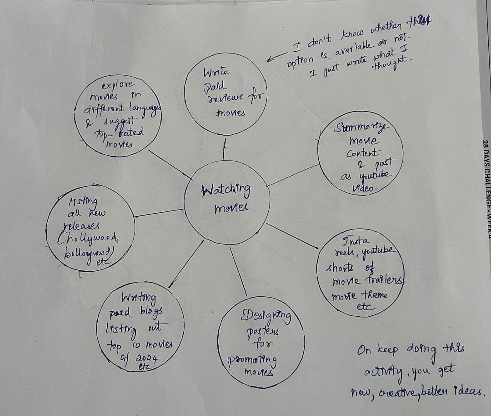

Work is made for you; you are not made for work.
Most of your pleasures in life come from your labor not your leisure. The amount of money you earn from your daily work is not the most important consideration( let me repeat - not the most important consideration. ) The most important consideration about your daily work is that you love what you do. Multiple sources of income and multiple jobs are quite different. At one point in my life I did not understand the difference. I had five jobs at one time. I would go from one to the other. I thought I was on the right road to financial freedom. I was actually on the road to an early death. Fortunately I became aware of the difference between a job and a source of income. (I - the author).
I only have one job. I only have one job and I love it. When you love what you do you will never have to work again. Multiple source Income's will frequently, although not always, be closely associated with your work since that would be your area of expertise.(Re-read this line )
THE AUTHOR'S EXPERTISE : My personal area of expertise is assisting
individuals in altering paradigms, their mental
conditioning, which permits these individuals to
effectively adapt to change and improve the results they
are getting in their life. (for simplicity consider as mentorship programs).
My daily work: I write and
conduct seminars for small, medium, and major
corporations worldwide. In the seminars I assist the
employees of these corporations to alter their old
paradigms which help the employee improve the quality
of their life. These seminars also make the employees
more valuable to the company.
Now my multiple sources of income: I’ll name a few.
1.I have audio and DVD/Video educational programs being
marketed by other people in various countries.
2.I have books in various languages being sold in many countries.
3.My educational programs are advertised and sold in
magazines and on the Internet and bookstores.
4.I’m extremely fortunate in that I write lyrics for the
MusiVation™ songs which are produced and recorded by
Michele, who is the international singing star of positive
mind changing MusiVation™ music. One such CD is titled,
“Songs for SUCCESS,” and another is “Songs for
MotiVation,” and these CD’s are sold in book and music
stores, Amazon.com and other sites internationally.
I have fun creating and love all of my many MSI’s.
When establishing MSI’s I want to suggest that you too
make them fun. Make them interesting and make them profitable.
Network Marketing is one of the most powerful and
fastest growing concepts in the world today. It has made
many millionaires. Individuals who are members of a
network marketing company have multiple sources of
income. ( again network marketing in this book)
Money is a reward received for
service rendered.Money is the ultimate servant.
With money you can provide service in a thousand
places at the same time. The more money you earn the
more you can help others. The more you help others the
more money you will earn…
A beautiful prosperity cycle.
What do the high income earners do?
Well, let’s think about this. You’re working with an
Infinite Source of supply, you have a marvelous mind,( your mind is your greatest asset, fill it with positive thoughts always)
and all things are possible. Napoleon Hill nailed it when
he said, “Anything the mind can conceive and believe it
can achieve.” Forget the past. Ignore your present
results. Dream. Let your mind fly…
The author has listed a few of his Multiple Sources of Income (MSIs). Similarly, we are going to do the same.
Sit in a comfortable position in a place where you won't be disturbed. Take a piece of paper and a pen, and draw the following diagram. Yes, do it along with the instructions. The only time is "NOW". So do it.
The author is doing his passion as a job. That’s why I urge you to find your Ikigai. Now, fill your Ikigai in the central circle, just like I filled "watching movies."
Now, think for about 5 minutes: how can a person make money by setting up multiple income sources using your passion? I’ll try to think for "watching movies."
Yes, think! Think!
Many of you might not get any ideas at first, right? Let me help you with this thinking process.
IDEA 1: I can watch an entire movie and write paid reviews for it.
IDEA 2: I can summarize the movie content and post videos on YouTube.
IDEA 3: Create Instagram Reels, YouTube Shorts, or TikToks featuring movie trailers, movie casts, or movie themes and post them on social media.
IDEA 4: Design promotional posters for movies—if you don’t know how to use free design tools, you might need external support.
IDEA 5: Write a blog listing the top 10 movies of 2024, 2023, 2022, etc., or top 100 movies of the year in India.
IDEA 6: List all new Hollywood movie releases, publish it as a blog, and spread awareness on social media.
IDEA 7: Explore movies in different languages and recommend top-rated films for people who speak that language.
This is not my passion, so I don't know if these ideas will work out. But someone who is passionate about watching movies could come up with something better than me that builds genuine wealth. The point is, I came up with all these ideas on my own. I don’t use ChatGPT or any other AI. I simply used the power that was gifted to me—my mind. And you’re blessed with the same power, so you can do it too.AI tools like ChatGPT generate ideas based on pre-existing data, but what if you come up with a new, creative, and better idea that has never existed before? Society will embrace it!
Remember, all of these are passive income sources. Initially, they require your time and effort. Yes, it takes work. But the goal is to set up passive income sources that fit into your life. Whether you’re in a job, a student, or whatever your situation is, you can dedicate time to these tasks according to your own schedule.
You can start with a maximum of five income sources. Work on each idea for at least one hour every day. It takes about 12 to 24 months to set everything up, but once the assets are established, they’ll grow stronger over time. They will generate cash flow for you for years to come. But this only happens if you take action every day, consistently finding new ways to grow your assets. You can use the IATT technique to find new ideas for growing a particular asset. The key is to pick one income source, work on it for 2-3 months, and once it becomes self-sustaining, move on to the next one.
Limit yourself to five, but make sure they’re the best five income sources.
I’m sure there’s no pain involved here because it’s your Ikigai—you love what you do. If you love what you do, you won’t feel frustrated. You’ll just enjoy every moment of it.
The IATT technique, given in the book "Become a Magnet to Money", is powerful. When I first tried it, I couldn’t come up with any ideas. The second time, I had a few. And now, as I’m doing it for “watching movies,” I’ve come up with several ideas. Since it’s not my passion, I couldn’t come up with more, but you’ll be doing this for your passion, so you’ll probably come up with even more ideas right from the second or third try.
Your passion is your area of expertise. You are the master. Don’t think of competition; just believe that you can do. Allow your mind to think logically, in all perspectives."ACTION ALWAYS BEATS INACTION"
I hope I made some sense in your life. If you feel this 5-minute blog is really worth your time, feel free to share this content with your friends and family.I am also a learner every day, learning with you all. Let’s learn together and grow together.
Note: This is just one of the practices mentioned in the book. There are many more powerful techniques, like the use of Multivision songs to reprogram your subconscious mind and attract wealth, the power of decisions, persistence, and daily actions to cultivate prosperity consciousness. To simplify: Poverty Consciousness: "I can't afford it", Prosperity Consciousness: "How can I afford it?" The choice is yours. By simply shifting your mindset, you will open yourself to more ideas and opportunities.
Follow my Instagram ID for the next update :
Follow on InstagramStill struggling to discover your ikigai? You can get the book Ikigai here: Purchase Link
To explore more on financial abundance, grab a copy of Become a Magnet to Money: Purchase Link
To level up your thinking and mindset, buy Think and Grow Rich (It’s not work hard; it is simply think and grow rich): Purchase Link